Condomínio Pássaros
O residencial faz parte da história e da ocupação planejada do empreendimento.

UM BAIRRO. NOVAS POSSIBILIDADES.
Moradia, natureza e convivência em uma visão integrada de bairro.
Descubra o projeto ↓ESSÊNCIA VILA PARK
Um projeto urbano que aproxima pessoas, espaços e novas possibilidades.
Apresentado no material institucional como Vila Parque, o empreendimento reúne projetos residenciais, clube de moradores e centro comercial. Uma trajetória de transformação que também contempla moradias, educação e a revitalização da Estrada Tenente Marques.
Conheça os espaços ↗UM BAIRRO EM MOVIMENTO
Projetos apresentados como implantados
no material institucional.
O residencial faz parte da história e da ocupação planejada do empreendimento.
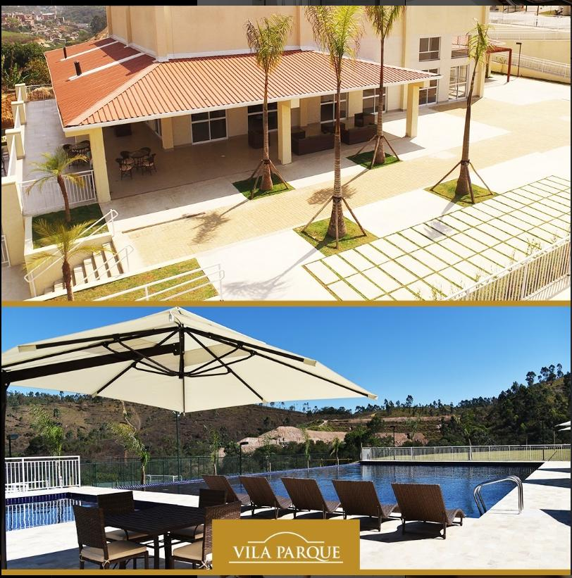
Um espaço de encontro que integra a proposta de convivência do bairro.
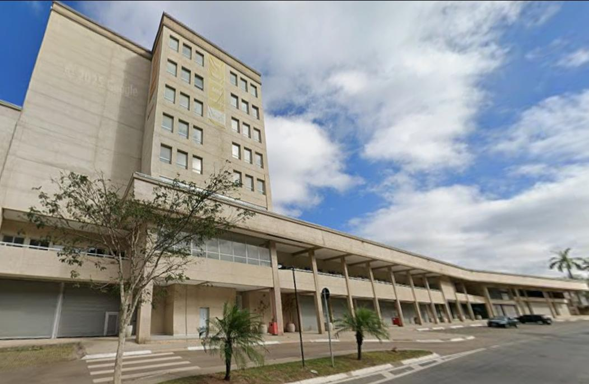
Comércio como parte de um bairro que reúne diferentes usos e atividades.
UM OLHAR PARA O AMANHÃ
O master plan apresentado prevê um bairro para 3.000 famílias, com condomínios verticais e horizontais, áreas públicas, clube e centro comercial.
A proposta também inclui a recuperação de áreas verdes com a criação de um parque linear.
Visão de projeto conforme apresentação institucional. Não representa anúncio de lançamento ou disponibilidade de unidades.HISTÓRIA E TRANSFORMAÇÃO
O material informa que o loteamento residencial foi aprovado em 1973 pela Companhia de Indústria, Comércio de Materiais e Agricultura — CICMA, com referência ao Decreto-Lei nº 58 de 10 de dezembro de 1973.
Segundo a apresentação, o Grupo RZK adquiriu as quadras 46 a 59 e 75, em área total aproximada de 1,3 milhão de m².
O documento apresenta a construção de 200 moradias, a Escola João de Barro e a revitalização da Estrada Tenente Marques, diante de desafios como áreas de risco, ocupações irregulares e degradação ambiental.
Dados reproduzidos da apresentação fornecida, sujeitos à validação documental antes da publicação.
ACERVO ORIGINAL
Fotografias, perspectivas e plantas do material fornecido. Clique em uma imagem para ver os detalhes.
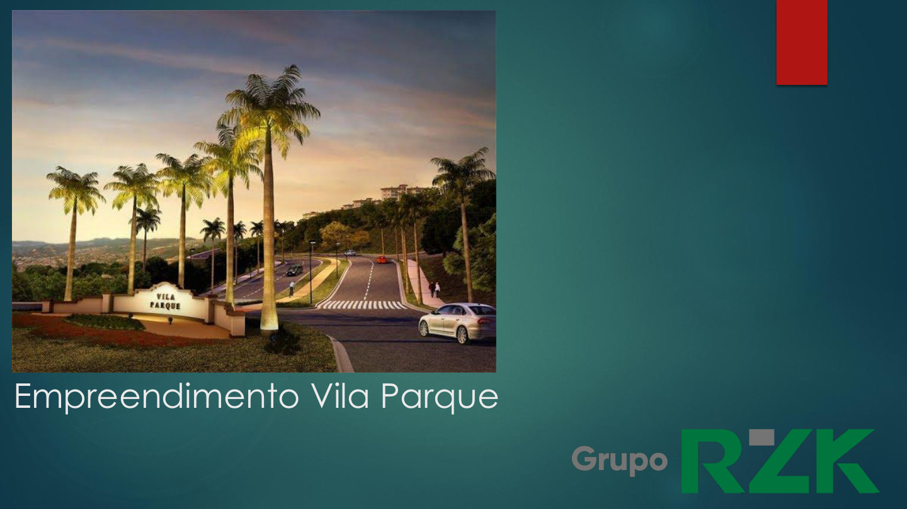
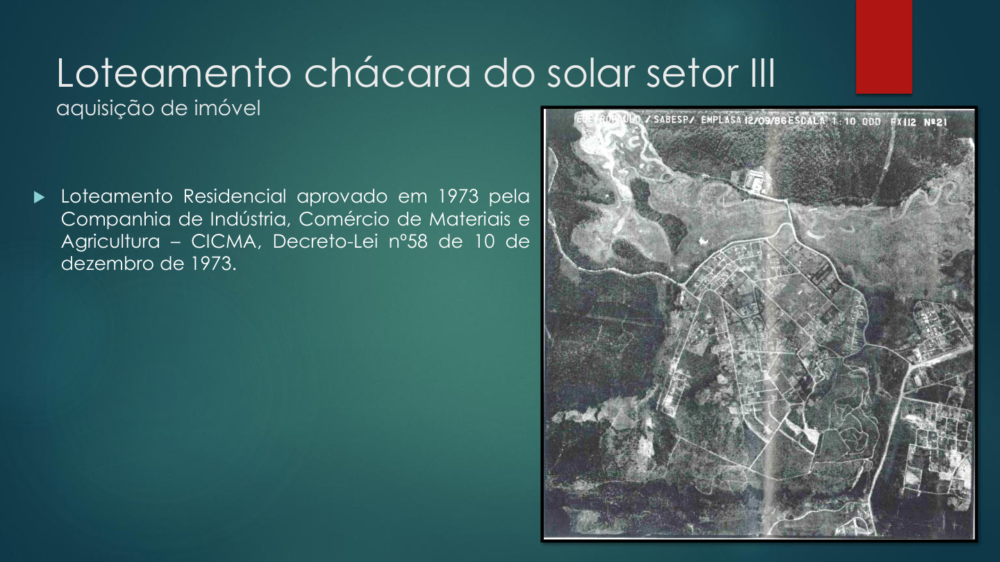
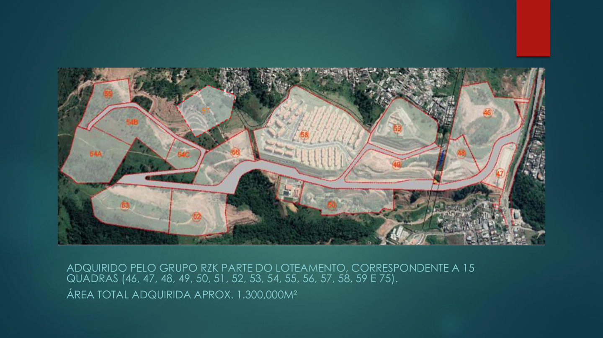
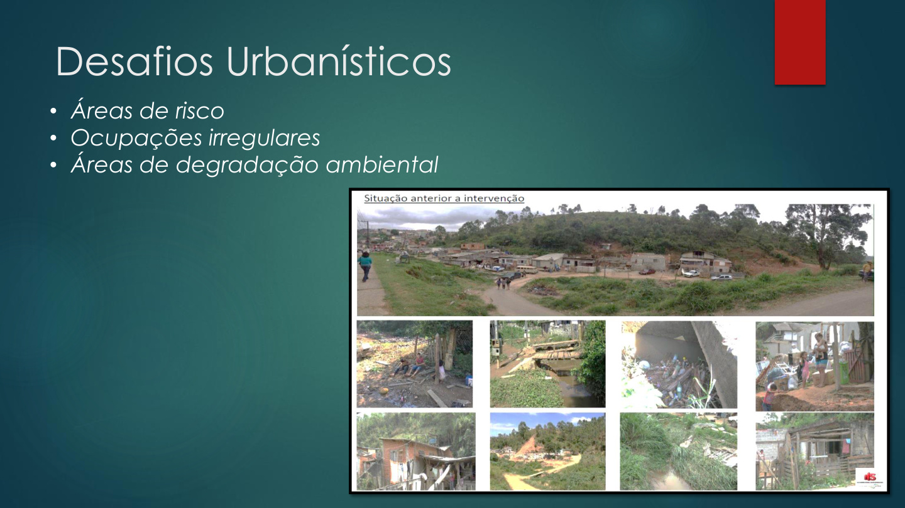
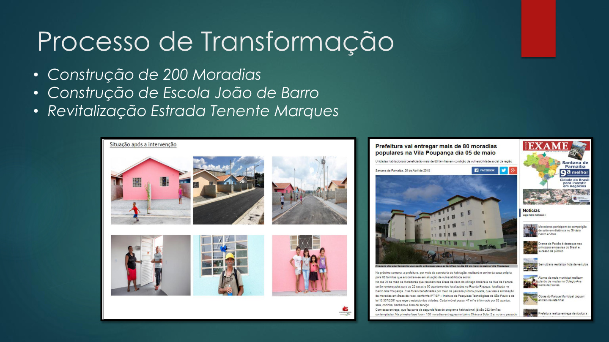
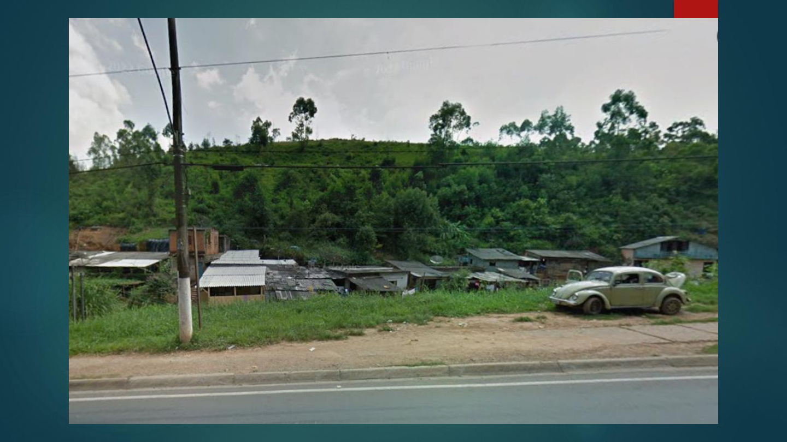
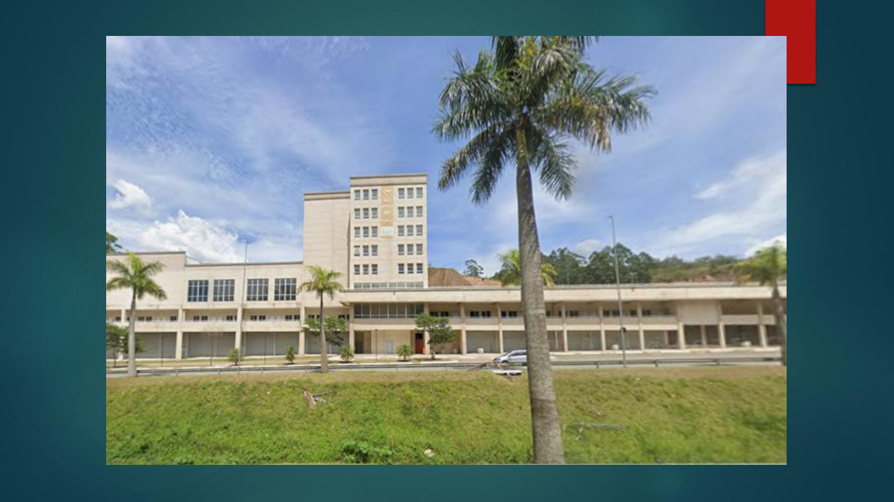
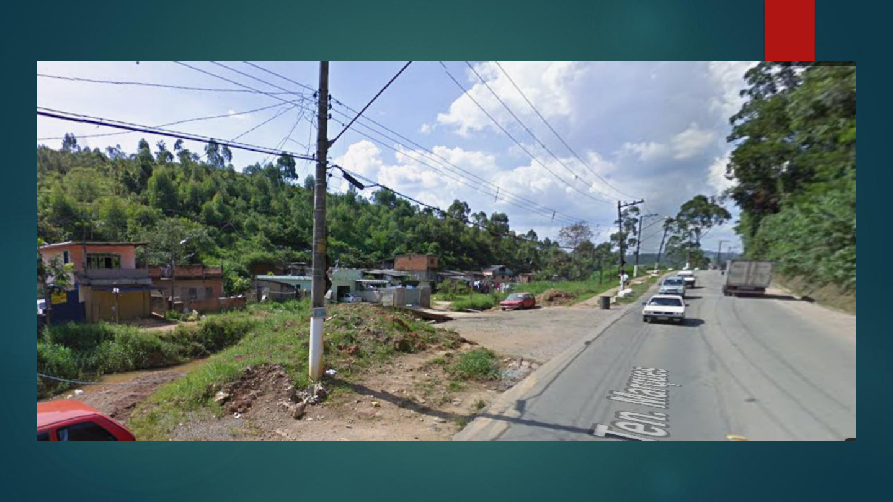
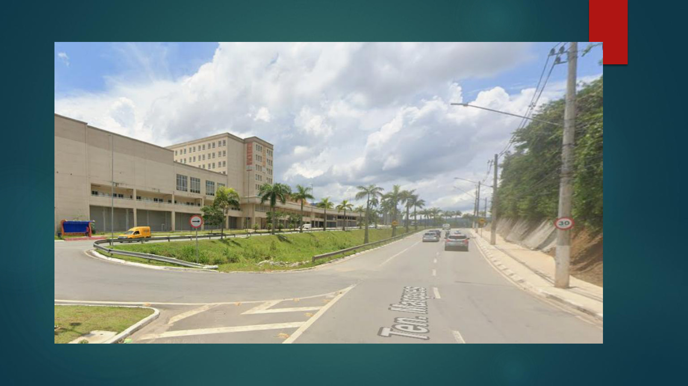
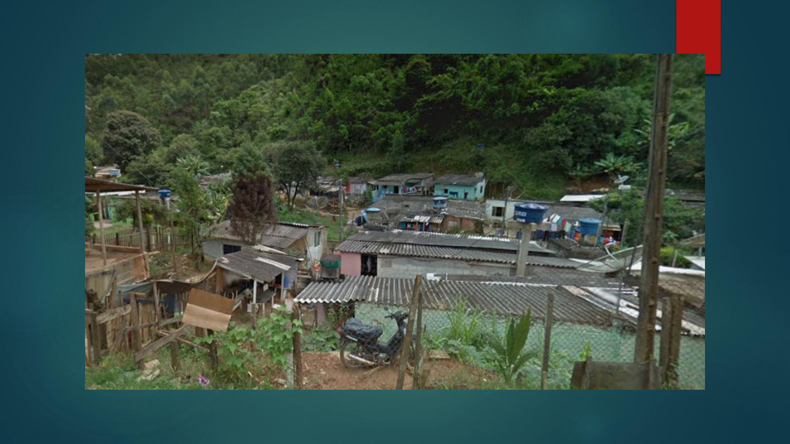
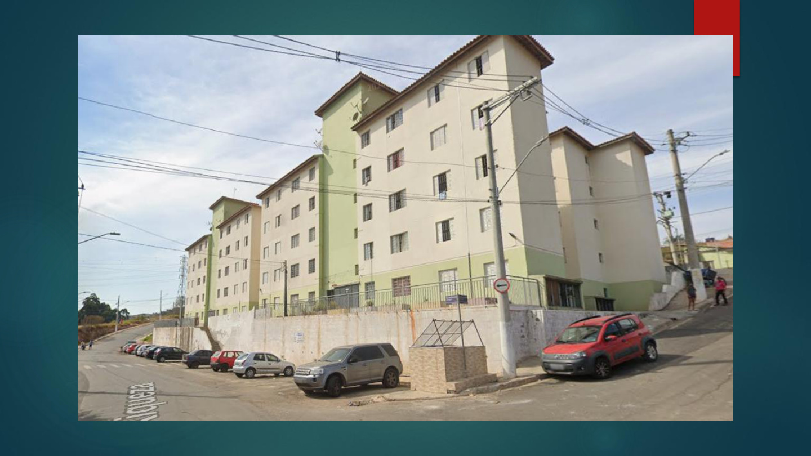
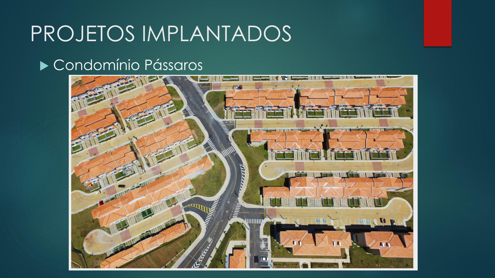
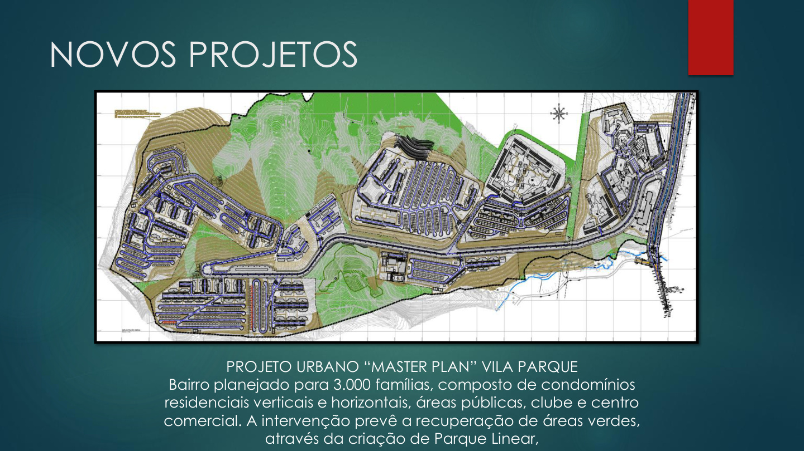
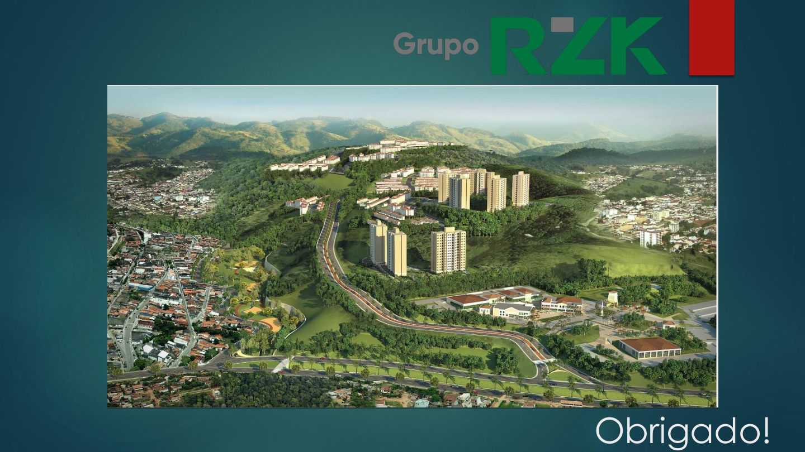
CONHEÇA A HISTÓRIA E A VISÃO
Explore a apresentação institucional do empreendimento.
Baixar PDF com imagens originais ↓